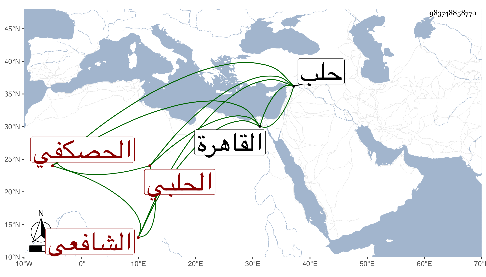

0902Sakhawi.DawLamic.ITO20230111-ara1.EIS1600.983748858770
Biography ID: 983748858770
455
حسن بن علي بن يوسف الاربلي الأصل الحصكفي الحلبي الشافعي أحد فضلاء حلب الآن ويعرف بابن السيوفي ، وهي حرفة أبيه . ولد قريبا من سنة خمسين وثمانمائة بحصكفا وقرأت بخطه أنه قرأ الشاطبية والقرآن بمضمونها على شيخ الاقراء أبي محمد سليمان بن أبي بكر بن المبارك شاه الهروي ، وهو علي الجلال أبي عبد الله يوسف بن رمضان بن الخضر الهروي وهو علي ابن الجزري وللأربعة عشر علي الزين جعفر السنهوري بالقاهرة فإنه قدمها ولكن قال شيخه إنه لم يقرأ عليه إلا ثمن حزب أو دونه ، وأخذ حينئذ عن الشمس الجوجري في الفقه وغيره يسيرا وعن الخيضري رواية وكذا قرأ بعض السبع على أبي الحسن الجبرتي نزيل سطح الأزهر والشاطبية على الشمس السلامي الحلبي بها وعنه أخذ الفقه والحديث ، والحديث فقط عن أبي ذر وأصول الدين والمنطق والمعاني والبيان عن الشيخ علي درويش وأخذ أيضا عن الكمال بن أبي شريف ، وكذا عن البقاعي ظنا وتميز وأقرأ الطلبة وربما أفتى وتنافس في مباحثه مع عبد النبي المغربي حين قدم عليهم حلب وقدم القاهرة في غيبتي مطلوبا بسبب وصية .
